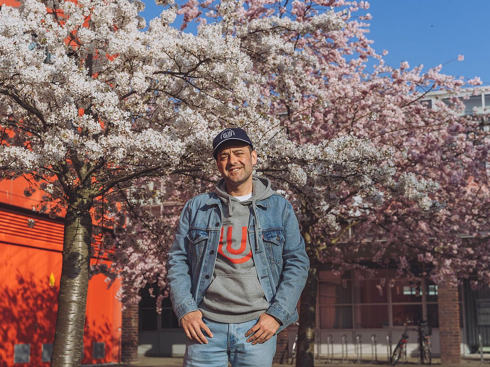

My path started in applied geology and hydrogeology at Ruhr-Universität Bochum, where I learned to read the subsurface through water–rock chemistry and the slow conversations between minerals and fluids. I then moved to the University of Bremen for a second master's in marine geosciences, drawn by the question of how marine microbes record themselves in the sedimentary archive.

Today I work as a marine molecular biogeochemist. Using lipid biomarkers, glycan chemistry and stable-isotope tools, I ask two linked questions: which microbes are active in the water column and in deep sediments, and how does their activity shape the environment?
Tools I work with
On the molecular side, I'm most at home with archaeal isoprenoid GDGTs and related membrane lipids, 13C-labelled substrate incubations, and high-resolution mass spectrometry — including MALDI-FT-ICR-MS imaging of microbial mats, which lets us see molecular patterns layer by layer. On the geochemistry side, I use PHREEQC to model water–rock interaction in groundwater systems, where the chemistry is often too extreme or too remote to sample directly.
Where I've worked, briefly
The fieldwork and samples in my projects span very different settings — the anoxic Black Sea, the Helgoland Mud Area in the southern North Sea, and the hypersaline microbial mats of Mallorca — but the molecular questions travel well between them. Each gives a different answer to the same family of questions about archaeal communities, carbon cycling, and the limits of life in extreme habitats.
The thing I like best about this work is the back-and-forth between the molecule and the place it came from. A single lipid is just a chain of atoms, but in context it can tell you about temperature, redox, energy metabolism — sometimes all at once.
Currently
I'm looking for collaborators.
Research interests
Areas where I'm open to collaboration: astrobiology, hydrothermal vents, the origin of life, marine viruses, marine molecular biogeochemistry, sediment geochemistry, palaeoclimatology, hydrogeochemistry, organic geochemistry, geothermal fields, aquatic geomicrobiology, and extreme environments — including the Atacama as a Mars-analogue setting.
Why this matters to me
Marine microbes do an enormous amount of unseen biogeochemical work — they remineralise organic matter, set the redox structure of sediments, and quietly run a large fraction of the carbon and nitrogen cycles. Reading their molecular fingerprints is one of the few ways we can study them at the scales that actually matter, both today and through deep time. That's the work I want to keep doing.